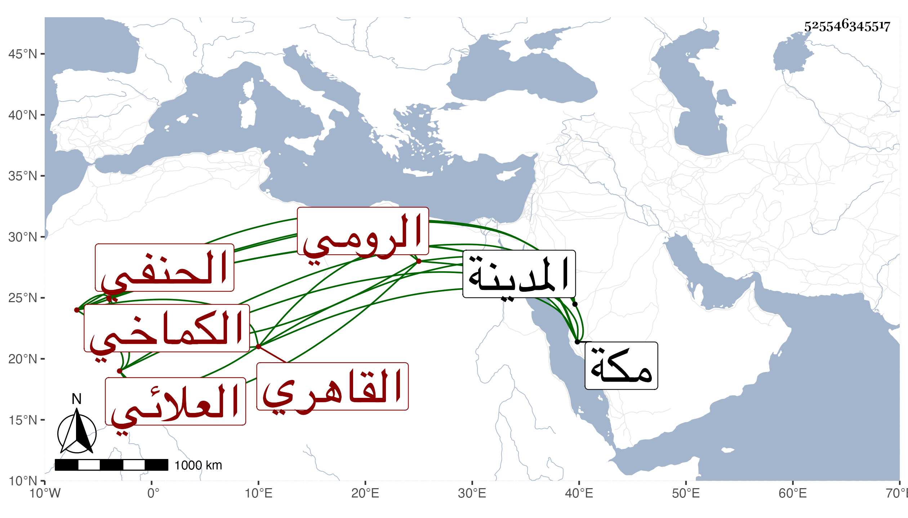

0902Sakhawi.DawLamic.ITO20230111-ara1.EIS1600.525546345517
Biography ID: 525546345517
15
محمد بن أحمد بن علي بن إدريس البدر أبو الفضل بن البدر العلائي الرومي الأصل القاهري الحنفي نزيل تربة قانم وربيب سعد الدين الكماخي ، والماضي جده . ولد في ليلة رابع عشر ذي الحجة سنة ست وخمسين وثمانمائة بالديلمية ، ومات أبوه وهو طفل فكفله جده المشار إليه ، وحفظ القرآن والقدورى والمنار والكافية وبعض الشاطبية وتلا للعشر فأزيد على الزين جعفر وابن الحمصاني وغيرهما وأخذ عن الزين قاسم والأمين الاقصرائي وتلميذه الصلاح الطرابلسي في الفقه ولازم في العربية والصرف والمنطق والمعاني وغيرهما التقى والعلاء الحصنيين واعتنى بالتردد للقادمين كملا حسن شلبي وملا أبي القسم الليثي السمرقندي وحبيب الله ، وطلب الحديث وقتا وسمع الحديث وطلب يسيرا وأخذ عني أشياء دراية ورواية بقراءته وقراءة غيره وكذا لازم الديمي وقرأ عليه شرح النخبة ولبس الخرقة من علي حفيد يوسف العجمي وأخذ عنه ريحان القلوب لجده وغير ذلك وحج وأخذ بمكة عن النجم بن فهد وبالمدينة عن أبي الفرج المراغي ، مع عقل وسكون وتعفف وميل للغرباء وخضوع لهم أكثر من خضوعه لمن هم في مرتبة شيوخهم ، وصار إليه بعض الجوامع بالروضة فتوجه لإصلاحه والسكنى هناك وربما خطب به ، ونعم الرجل .
